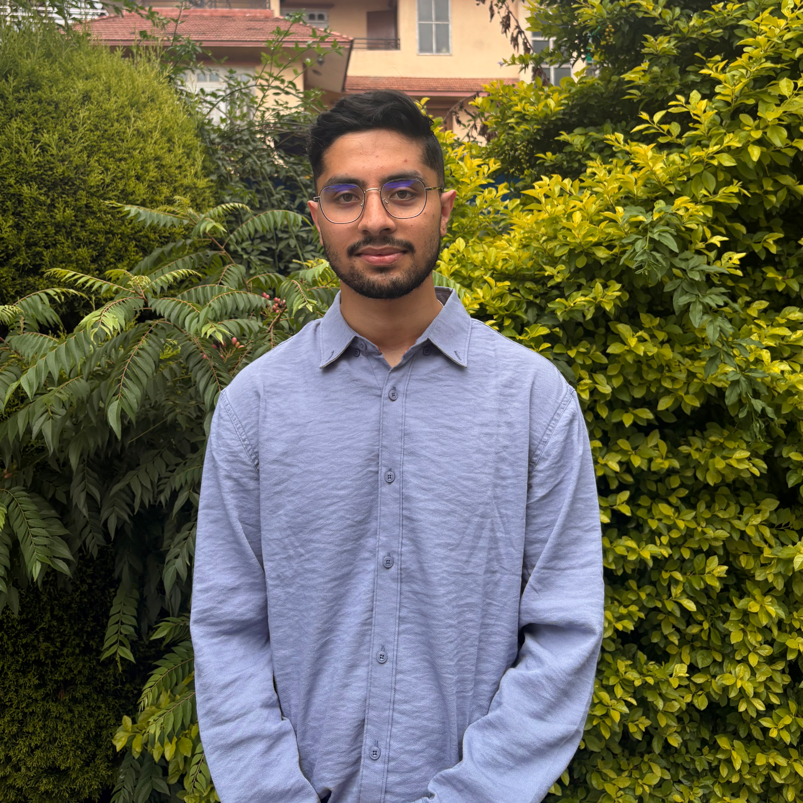

Bachelor of Engineering in Computer Engineering
Institute of Engineering (IOE), Thapathali Campus, Kathmandu, Nepal
Computer Engineer | AI Research & ML Systems
B.E. Computer Engineering · IOE, Thapathali Campus
Email: dahalsugam24@gmail.com

I'm a Computer Engineering graduate working across AI research and engineering. My experience spans computer vision, language models, and ML systems, from research and experimentation to model deployment.
I began by building a GPT-style language model from scratch, which shaped my interest in understanding how systems work. Since then, I've worked on machine learning research, production inference systems, and data pipelines.
I enjoy combining careful experimentation with practical engineering to build reliable systems.
Outside technology, I follow football and cricket closely and have a keen interest in history, geography, and politics.
Institute of Engineering (IOE), Thapathali Campus, Kathmandu, Nepal
Global School of Science, Kathmandu, Nepal
My interests span deep learning, particularly computer vision, language models, and generative modeling. I'm drawn to understanding how neural networks learn and represent information, with a growing focus on mechanistic interpretability and generalization. My research so far has involved semantic segmentation, generative augmentation, and rigorous model evaluation.
Developed a six-class land-use segmentation benchmark covering 202.4 km² of the Kathmandu Valley across 408 hand-annotated fine-resolution scenes. The benchmark includes fold definitions and metric records, with trained model checkpoints listed in the research repository. The dataset is deposited on Zenodo and available by request.
Compared U-Net, UNetFormer, SegFormer-B0, SegNeXt-T, and TC-SegFormer over 30 fold runs under random and sequence-block partitioning. Switching to sequence blocks lowered mean intersection over union (mIoU) by 0.051–0.095 across the five architectures. The protocols used the same scenes, seeds, and training schedules, with export order serving as a proxy for spatial adjacency.
Developed TC-SegFormer by adding a half-resolution residual detail path, boundary-reliability reweighting, a soft-clDice topology loss, and presence-balanced sampling to SegFormer-B0. With 1.9% more parameters, it improved mIoU by 0.053–0.111 over the backbone in all six Kathmandu fold runs. The two models performed similarly on LoveDA. An ablation on one fold and seed found no clear benefit from boundary reweighting on its own.
Generated image–label pairs using mask diffusion and LoRA-adapted Stable Diffusion with class-channel ControlNet conditioning. On one sequence-block fold and seed, compared a 1:1 mix of real and synthetic pairs with real-only training at the same compute budget. The mix lowered mIoU in all five architectures, by 0.014 on average, with the largest class losses for roads and rivers. Paired bootstrap confidence intervals for the mIoU change excluded zero for two architectures.
Preprint · 2026
arXiv:2611.10847
Submitted for journal publication.
Dataset · 2026
Zenodo
PyTorch, SegFormer, Stable Diffusion, ControlNet, FastAPI, Weights & Biases | Team of 4
Python, LightOnOCR-2-1B (VLM), vLLM, FastAPI, Docker, Hugging Face Transformers
Python, LangGraph, ChromaDB, Groq, FastAPI, Streamlit, Docker, pytest
PyTorch, Transformers, Multi-Head Attention, BPE Tokenization, tiktoken
Python, PyTorch, GPT-2 Fine-Tuning, Flask, PostgreSQL, React | Team of 4
Python, Scikit-learn, XGBoost, Pandas, PCA
I ran for student office in a closely contested campus election, narrowly missing out by a handful of votes. It reinforced my interest in leadership and community involvement. Growing up, I was elected school captain, and I picked up a fair share of medals across sports along the way. What I really want going forward is to contribute to something bigger than just my own growth, whether that's mentoring, organizing, or getting involved in community work, not necessarily tied to my career at all.